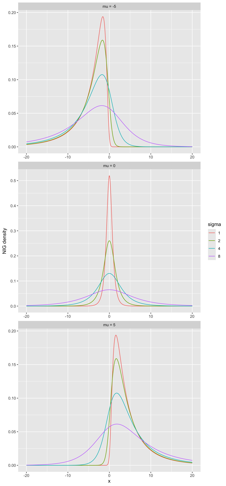
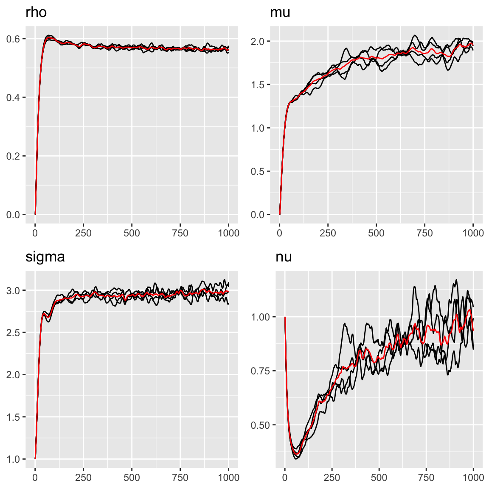
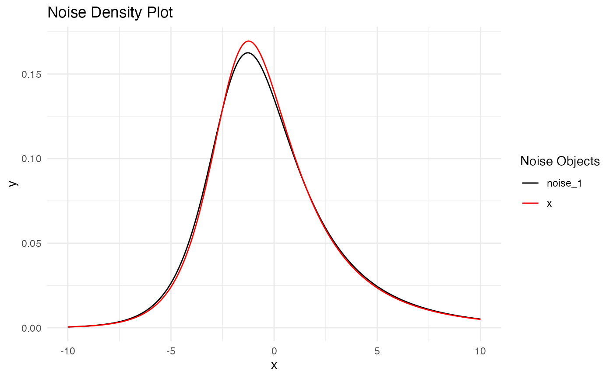
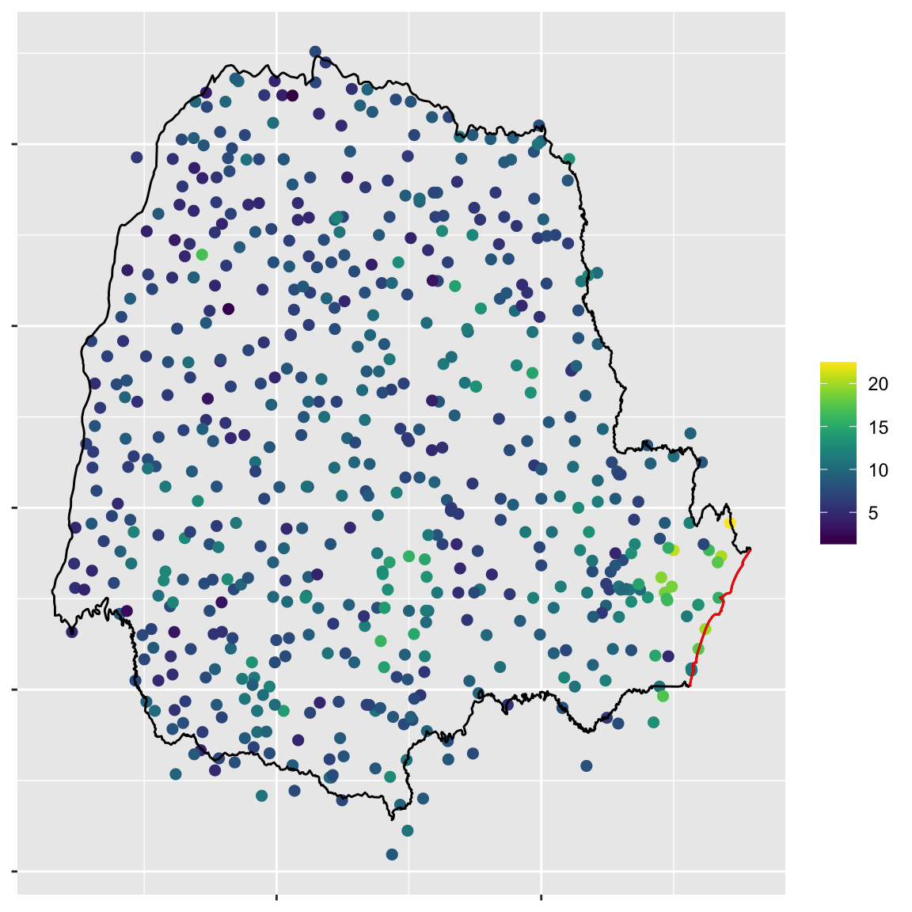
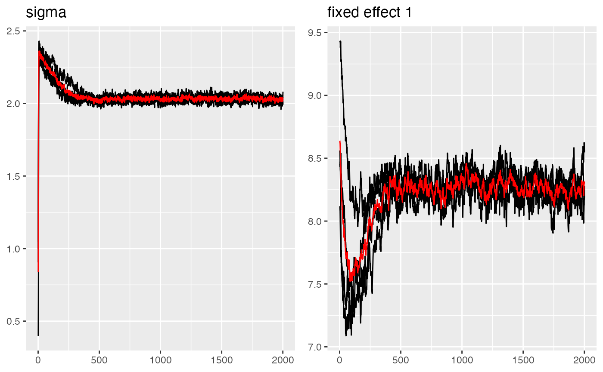
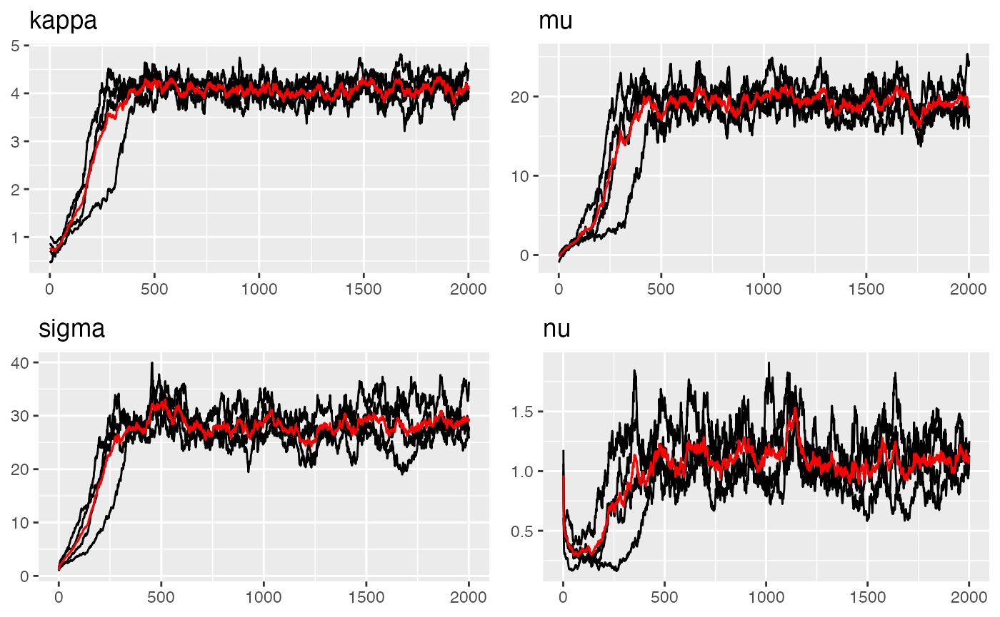
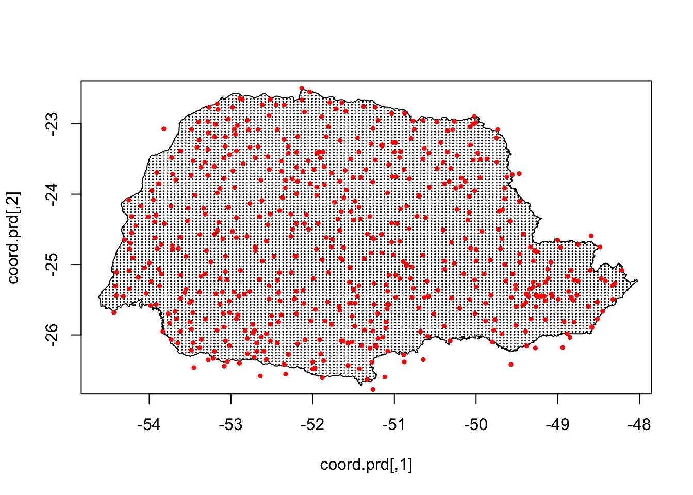
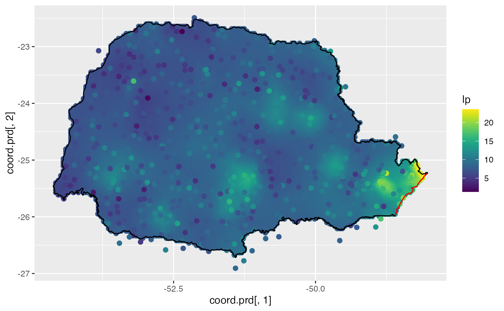

Ngme2 - A Unified, Efficient, and Flexible non-Gaussian Modeling Framework
2025-11-30
Source:vignettes/ngme2.Rmd
ngme2.RmdIntroduction
Latent Gaussian models (LGMs) have emerged as a cornerstone of modern statistical inference, providing a powerful framework for modeling hierarchical dependencies in data.
Despite their versatility, LGMs encounter fundamental limitations when applied to data exhibiting non-Gaussian characteristics. The Gaussian assumption imposes inherent constraints that may be overly restrictive for many real-world phenomena. Some common non-Gaussian features exhibited by real world data include asymmetry, heavy tails, and non-smoothness.
ngme2
R package is a unified, efficient, and flexible modeling software for
modeling non-Gaussian data. It is the updated version of ngme, which
was first introduced in (Asar et al.
2020)
Features
- Support temporal models like AR(1), Ornstein−Uhlenbeck and random walk processes, and spatial models like Matern fields.
- Support latent processes driven by non-Gaussian noises (normal inverse Gaussian(NIG), generalized asymmetric Laplace (GAL), etc).
- Support non-Gaussian, and correlated measurement noises.
- Support kriging prediction at unknown locations.
- Support latent processes and random-effects model for longitudinal data.
- Support the bivariate type-G model, which can model 2 non-Gaussian fields jointly (Bolin and Wallin 2019).
- Support the separable space-time model, and non-separable space-time model.
- Support the user-defined model via “generic” and “generic_ns” functions.
- Provide estimation diagnostics, and cross-validation for model selection.
Model Framework
The package Ngme2 implements the latent linear
non-Gaussian model (LLnGM) framework, which uses flexible operator
formulations to describe data, latent processes, and noise in a unified
way:
The data model links observations to the latent process through the observation matrix , adds fixed effects , and allows non-Gaussian measurement noise .
The process model specifies the core dependency structure of via the operator matrix , which is driven by potentially non-Gaussian noise . This operator-based formulation unifies a wide spectrum of model structures, from simple random effects to complex spatio-temporal patterns.
Here denotes element-wise multiplication. The noise model defines and through normal mean-variance mixtures conditioned on the GIG mixing vectors and . The parameter vector collects all model parameters.
Here is a simple template for using the core function
ngme to model the single response:
ngme(
formula=Y ~ x1 + x2 + f(index, model=ar1(mesh_1d), noise=noise_nig()),
data=data.frame(Y=Y, x1=x1, x2=x2, index=index),
noise = noise_normal()
)Here, function f is for modeling the stochastic process
W with Gaussian or non-Gaussian noise, we will discuss this later.
noise stands for the measurement noise distribution. In
this case, the model will have a Gaussian likelihood.
Non-Gaussian Model
Here we assume the non-Gaussian process is a type-G Lévy process, whose increments can be represented as location-scale mixtures: where are parameters, is independent of , and is a positive infinitely divisible random variable. This results in the following form, where is the operator part:
where and can be non-stationary.
One example in ngme2 is the normal inverse Gaussian
(NIG) noise, where
follows an Inverse Gaussian distribution with parameter
(IG(,
)).
A random variable follows an inverse Gaussian distribution with parameters and , denoted by , if it has probability density function (pdf) given by We can generate samples from an inverse Gaussian distribution with parameters and by generating samples from the generalized inverse Gaussian distribution with parameters , and . The rGIG function can be used to generate samples from the generalized inverse Gaussian distribution.
If , and , with independent of , then follows a normal inverse Gaussian (NIG) distribution with pdf where is a modified Bessel function of the third kind. In this form, the NIG density is overparameterized, so we set , which results in . Thus, we have the parameters , , and .
The NIG model assumes that the stochastic variance follows an inverse Gaussian distribution with parameters and , where
The following figure shows the density of NIG distribution with different parameters.

Parameter Estimation
- Ngme2 does maximum likelihood estimation through preconditioned stochastic gradient descent.
- Multiple chains are run in parallel for better convergence checks.
Optimizer options can be set through control_opt. The
supported optimizers are listed in ngme_optimizers.
ngme_optimizers()
#> [1] "sgd" "precond_sgd" "momentum" "adagrad" "rmsprop"
#> [6] "adam" "adamW" "bfgs" "adaptive_gd"
# For details about optimizer options, see e.g. help(adam)See Model estimation and prediction for more details.
Ngme Model Structure
Specify the driven noise
There are 2 types of common noise involved in the model, one is the
innovation noise of a stochastic process, one is the measurement noise
of the observations. They can be both specified by
noise_<type> function.
For now we support normal, skew_t, NIG, and GAL noises.
The R class ngme_noise has the following interface:
library(fmesher)
library(splancs)
library(lattice)
library(ggplot2)
library(grid)
library(gridExtra)
library(viridis)
library(ngme2)
noise_normal(sigma = 1) # normal noise
#> Noise type: NORMAL
#> Noise parameters:
#> sigma = 1
noise_nig(mu = 1, sigma = 2, nu = 1) # nig noise
#> Noise type: NIG
#> Noise parameters:
#> mu = 1
#> sigma = 2
#> nu = 1
noise_nig( # non-stationary nig noise
B_mu = matrix(c(1:10), ncol = 2),
theta_mu = c(1, 2),
B_sigma = matrix(c(1:10), ncol = 2),
theta_sigma = c(1, 2),
nu = 1
)
#> Noise type: NIG
#> Noise parameters:
#> theta_mu = 1, 2
#> theta_sigma = 1, 2
#> nu = 1
noise_skew_t(mu = 1, sigma = 2, nu = 1) # skew_t noise
#> Noise type: SKEW_T
#> Noise parameters:
#> mu = 1
#> sigma = 2
#> nu = 1Notice that the 3rd example is defined for non-stationary NIG noise. In general, we can define non-stationary noise by the following: where , , and
ngme_noise(
type, # the type of noise
theta_mu, # mu parameter
theta_sigma, # sigma parameter
theta_nu, # nu parameter
B_mu, # basis matrix for non-stationary mu
B_sigma, # basis matrix for non-stationary sigma
B_nu # basis matrix for non-stationary nu
)It will construct the following noise structure:
Additionally, ngme2 provides a special combined noise
model that merges both Gaussian and NIG noise components:
noise_normal_nig(
mu = 2, # NIG parameter mu
sigma_nig = 3, # NIG noise scale
nu = 1, # NIG shape parameter
sigma_normal = 0.8 # Normal noise standard deviation
)
#> Noise type: NORMAL_NIG
#> Noise parameters:
#> mu = 2
#> sigma_nig = 3
#> nu = 1
#> sigma_normal = 0.8This combined noise model is particularly useful for complex
processes where both normal variations and heavy-tailed events occur.
For more details, see the dedicated vignette:
vignette("normal-nig-noise", package = "ngme2").
Specify stochastic process with f function
The middle layer is the stochastic process, in R interface, it is
represented as a f function. The process can be specified
by different noise structure. See ?ngme_model_types() for
more details.
Some examples of using f function to specify
ngme_model:
f(1:10, model = ar1(), noise = noise_nig())
#> Model type: AR(1)
#> rho = 0
#> Noise type: NIG
#> Noise parameters:
#> mu = 0
#> sigma = 1
#> nu = 1One useful model would be the SPDE model with Gaussian or non-Gaussian noise, see the vignette for details.
Specifying latent models with formula in ngme
The latent model can be specified additively as a
formula argument in ngme function together
with fixed effects.
We use R formula to specify the latent model. We can specify the
model using f within the formula.
For example, the following formula
formula <- Y ~ x1 + f(
x2,
model = ar1(),
noise = noise_nig()
) + f(x3,
model = rw1(),
noise = noise_normal()
)corresponds to the model
where
is an AR(1) process,
is a random walk 1 process.
is random effects.. . By default, we have intercept. The distribution of
the measurement error
is given in the ngme function.
The entire model can be fitted, along with the specification of the
distribution of the measurement error through the ngme
function:
ngme(
formula = formula,
family = noise_normal(sigma = 0.5),
data = data.frame(Y = 1:5, x1 = 2:6, x2 = 3:7, x3 = 4:8),
control_opt = control_opt(
estimation = FALSE
)
)
#> *** Ngme object ***
#>
#> Fixed effects:
#> (Intercept) x1
#> 7.365 -0.869
#>
#> Models:
#> $field1
#> Model type: AR(1)
#> rho = 0
#> Noise type: NIG
#> Noise parameters:
#> mu = 0
#> sigma = 1
#> nu = 1
#>
#> $field2
#> Model type: Random walk (order 1)
#> No parameter.
#> Noise type: NORMAL
#> Noise parameters:
#> sigma = 1
#>
#> Measurement noise:
#> Noise type: NORMAL
#> Noise parameters:
#> sigma = 0.5It gives the ngme object, which has three parts:
- Fixed effects (intercept and x1)
- Measurement noise (normal noise)
- Latent models (contains 2 models, ar1 and rw1)
We can turn the estimation = TRUE to start estimating
the model.
Optimization options
The optimization process is controlled by the
control_opt argument.
Different stochastic optimization algorithms can be used for the
optimization process. See ?ngme_optimizers for more
details.
Convergence check methods
ngme2 can monitor convergence with three optional
diagnostics. They all run at each checkpoint (every
iters_per_check iterations, default
iterations / n_batch). Checks only begin after
n_min_batch checkpoints have accumulated.
Gelman–Rubin R̂ (
R_hat_conv_check,max_R_hat)
Compares between- and within-chain variance for each parameter; pass ifR_hat <= max_R_hat(default 1.1). Requires at least 2 chains (n_parallel_chain >= 2).-
Trend/Std diagnostic (
trend_std_conv_check)
Uses the lastn_slope_checkcheckpoints (default 3). Passes when both hold for each parameter:-
sqrt(var) / |mean| <= std_lim(default 0.01)
- |linear slope over last
n_slope_checkmeans|<= trend_lim(default 0.01).
-
Pflug diagnostic (
pflug_conv_check,pflug_alpha)
For each chain, checkspflug_sum < pflug_alpha * max_pflug_sumin the latest batch (defaultpflug_alpha = 1). If all chains satisfy this, convergence is declared regardless of the other two checks.
Combination rule: - A parameter is considered converged if
any enabled diagnostic passes for it (R̂ or
Trend/Std).
- Overall convergence is reached when all parameters are converged, or
when the Pflug diagnostic passes for all chains.
Key control knobs (set via control_opt()):
ctrl <- control_opt(
n_batch = 10, # number of checkpoints
n_min_batch = 3, # don't check before this many checkpoints
n_slope_check = 3, # window for trend regression
R_hat_conv_check = TRUE,
max_R_hat = 1.1,
trend_std_conv_check = TRUE,
std_lim = 0.01,
trend_lim = 0.01,
pflug_conv_check = TRUE,
pflug_alpha = 1,
print_check_info = TRUE # print per-check diagnostics
)Recommendations: - Use at least two chains for R̂; with one chain only
Trend/Std and Pflug can run. - If checks trigger too early, increase
n_min_batch or loosen std_lim /
trend_lim. - Pflug is inexpensive; keep it on unless it
yields false positives in your model.
A simple example - AR1 process with nig noise
Now let’s see an example of an AR1 process with nig noise. The process is defined as
Here, is the iid NIG noise. And, it is easy to verify that , where
n_obs <- 500
sigma_eps <- 0.5
rho <- 0.5
mu <- 2
delta <- -mu
sigma <- 3
nu <- 1
# First we generate V. V_i follows inverse Gaussian distribution
trueV <- ngme2::rig(n_obs, nu, nu, seed = 10)
# Then generate the nig noise
mynoise <- delta + mu * trueV + sigma * sqrt(trueV) * rnorm(n_obs)
trueW <- Reduce(function(x, y) {
y + rho * x
}, mynoise, accumulate = T)
Y <- trueW + rnorm(n_obs, mean = 0, sd = sigma_eps)
# Add some fixed effects
x1 <- runif(n_obs)
x2 <- rexp(n_obs)
beta <- c(-3, -1, 2)
X <- (model.matrix(Y ~ x1 + x2)) # design matrix
Y <- as.numeric(Y + X %*% beta)Now let’s fit the model using ngme. Here we can use
control_opt to modify the control variables for the
ngme. See ?control_opt for more optioins.
# # Fit the model with the AR1 model
fit_nig <- ngme(
Y ~ x1 + x2 + f(
1:n_obs,
name = "my_ar",
model = ar1(),
noise = noise_nig()
),
data = data.frame(x1 = x1, x2 = x2, Y = Y),
control_opt = control_opt(
burnin = 100,
iterations = 3000,
n_parallel_chain = 4,
seed = 3
)
)
#> Starting estimation...
#>
#> Starting posterior sampling...
#> Posterior sampling done!
#> Average standard deviation of the posterior W: 4.334425
#> Note:
#> 1. Use ngme_post_samples(..) to access the posterior samples.
#> 2. Use ngme_result(..) to access different latent models.Next we can read the result directly from the object.
fit_nig
#> *** Ngme object ***
#>
#> Fixed effects:
#> (Intercept) x1 x2
#> -2.84 -1.36 2.02
#>
#> Models:
#> $my_ar
#> Model type: AR(1)
#> rho = 0.569
#> Noise type: NIG
#> Noise parameters:
#> mu = 1.9
#> sigma = 2.98
#> nu = 0.9
#>
#> Measurement noise:
#> Noise type: NORMAL
#> Noise parameters:
#> sigma = 0.518As we can see, the model converges in 350 iterations. The estimation results are close to the real parameter.
We can also use the traceplot function to see the
estimation traceplot.

Parameters of the AR1 model
#> Last estimates:
#> $rho
#> [1] 0.5694271
#>
#> $mu
#> [1] 1.900084
#>
#> $sigma
#> [1] 2.981219
#>
#> $nu
#> [1] 0.9186725We can also do a density comparison with the estimated noise and the true NIG noise, we can see they are very close:
# fit_nig$replicates[[1]] means for the 1st replicate
plot(
fit_nig$replicates[[1]]$models[[1]]$noise,
noise_nig(mu = mu, sigma = sigma, nu = nu)
)
Paraná dataset
The rainfall data from Paraná (Brazil) is collected by the National Water Agency in Brazil (Agencia Nacional de Águas, ANA, in Portuguese). ANA collects data from many locations over Brazil, and all these data are freely available from the ANA website (http://www3.ana.gov.br/portal/ANA).
We will briefly illustrate the command we use, and the result of the estimation.
library(INLA)
#> Loading required package: Matrix
#> This is INLA_25.04.16 built 2025-04-16 08:17:54 UTC.
#> - See www.r-inla.org/contact-us for how to get help.
#> - List available models/likelihoods/etc with inla.list.models()
#> - Use inla.doc(<NAME>) to access documentation
#> - Consider upgrading R-INLA to testing[25.11.22] or stable[25.10.19] (require R-4.5)
#>
#> Attaching package: 'INLA'
#> The following object is masked from 'package:ngme2':
#>
#> f
data(PRprec)
data(PRborder)
# Create mesh
coords <- as.matrix(PRprec[, 1:2])
prdomain <- fmesher::fm_nonconvex_hull(coords, -0.03, -0.05, resolution = c(100, 100))
prmesh <- fmesher::fm_mesh_2d(boundary = prdomain, max.edge = c(0.45, 1), cutoff = 0.2)
# monthly mean at each location
Y <- rowMeans(PRprec[, 12 + 1:31]) # 2 + Octobor
ind <- !is.na(Y) # non-NA index
Y <- Y_mean <- Y[ind]
coords <- as.matrix(PRprec[ind, 1:2])
seaDist <- apply(spDists(coords, PRborder[1034:1078, ],
longlat = TRUE
), 1, min)Plot the data:

Mean of the rainfall in Octobor 2012 in Paraná
# Define the control options
control <- control_opt(
iterations = 2000,
n_min_batch = 4,
n_batch = 10,
n_parallel_chain = 4,
optimizer = precond_sgd(),
print_check_info = FALSE,
seed = 16
)
parana_fit <- ngme(
formula = Y ~ 1 +
f(coords,
model = matern(
mesh = prmesh,
),
noise = noise_nig(),
name = "spde"
),
data = data.frame(Y = Y),
family = "normal",
control_opt = control
)
#> Starting estimation...
#>
#> Starting posterior sampling...
#> Posterior sampling done!
#> Average standard deviation of the posterior W: 2.90812
#> Note:
#> 1. Use ngme_post_samples(..) to access the posterior samples.
#> 2. Use ngme_result(..) to access different latent models.
# traceplots
## fixed effects and measurement error
traceplot(parana_fit)
#> Last estimates:
#> $sigma
#> [1] 2.042884
#>
#> $`fixed effect 1`
#> [1] 8.297917
## spde model
traceplot(parana_fit, "spde")
#> Last estimates:
#> $kappa
#> [1] 4.124553
#>
#> $mu
#> [1] 18.75537
#>
#> $sigma
#> [1] 29.15408
#>
#> $nu
#> [1] 1.122146Parameter estimation results:
#> $fixed_effects
#> (Intercept)
#> 8.297917
#>
#> $sigma
#> [1] 2.042622
#> $kappa
#> [1] 4.120075
#>
#> $mu
#> [1] 18.75537
#>
#> $sigma
#> [1] 28.90908
#>
#> $nu
#> [1] 1.119443Prediction
Now we can use the fitted model to do prediction by generating the prediction grid and giving the predict location.
nxy <- c(150, 100)
projgrid <- rSPDE::rspde.mesh.projector(prmesh,
xlim = range(PRborder[, 1]),
ylim = range(PRborder[, 2]), dims = nxy
)
xy.in <- inout(projgrid$lattice$loc, cbind(PRborder[, 1], PRborder[, 2]))
coord.prd <- projgrid$lattice$loc[xy.in, ]
plot(coord.prd, type = "p", cex = 0.1)
lines(PRborder)
points(coords[, 1], coords[, 2], pch = 19, cex = 0.5, col = "red")
# Doing prediction by giving the predict location
pds <- predict(parana_fit, map = list(spde = coord.prd))
lp <- pds$mean
ggplot() +
geom_point(aes(
x = coord.prd[, 1], y = coord.prd[, 2],
colour = lp
), size = 2, alpha = 1) +
geom_point(aes(
x = coords[, 1], y = coords[, 2],
colour = Y_mean
), size = 2, alpha = 1) +
scale_color_gradientn(colours = viridis(100)) +
geom_path(aes(x = PRborder[, 1], y = PRborder[, 2])) +
geom_path(aes(x = PRborder[1034:1078, 1], y = PRborder[
1034:1078,
2
]), colour = "red")
Model comparison with latent Gaussian model via cross-validation
We can also fit a latent Gaussian model and compare it with the NIG model via cross-validation. The following code shows how to do it.
parana_fit_gauss <- ngme(
formula = Y ~ 1 +
f(coords,
model = matern(
mesh = prmesh,
),
noise = noise_normal(),
name = "spde"
),
data = data.frame(Y = Y),
family = "normal",
control_opt = control
)
#> Starting estimation...
#>
#> Starting posterior sampling...
#> Posterior sampling done!
#> Average standard deviation of the posterior W: 2.533153
#> Note:
#> 1. Use ngme_post_samples(..) to access the posterior samples.
#> 2. Use ngme_result(..) to access different latent models.
cv <- cross_validation(
list(
gauss = parana_fit_gauss,
nig = parana_fit
),
type = "k-fold",
seed = 13,
n_gibbs_samples = 2000,
n_burnin = 100,
k = 10,
print = FALSE
)
cv
#> $mean.scores
#> MAE MSE neg.CRPS neg.sCRPS
#> gauss 1.741200 5.23556 1.247451 1.457584
#> nig 1.731045 5.20822 1.245195 1.453929
#>
#> $sd.scores
#> MAE MSE neg.CRPS neg.sCRPS
#> gauss 0.002599346 0.01329710 0.003355939 0.001551408
#> nig 0.002889866 0.01657978 0.003168377 0.001538119